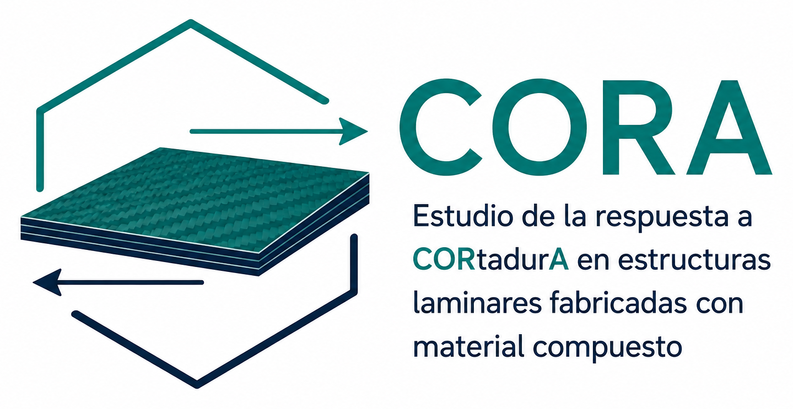
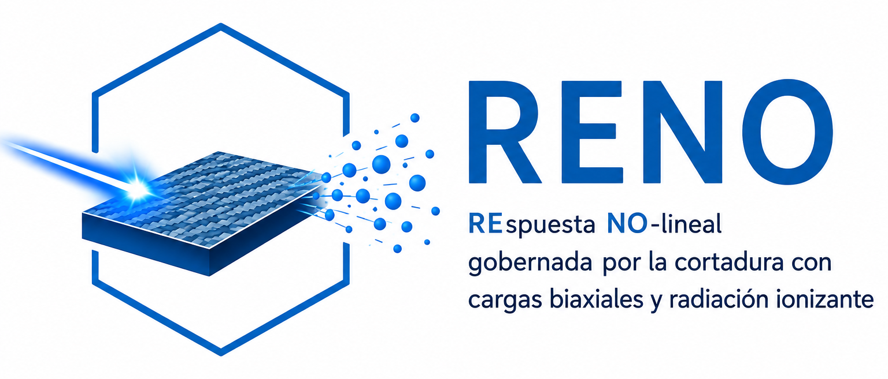
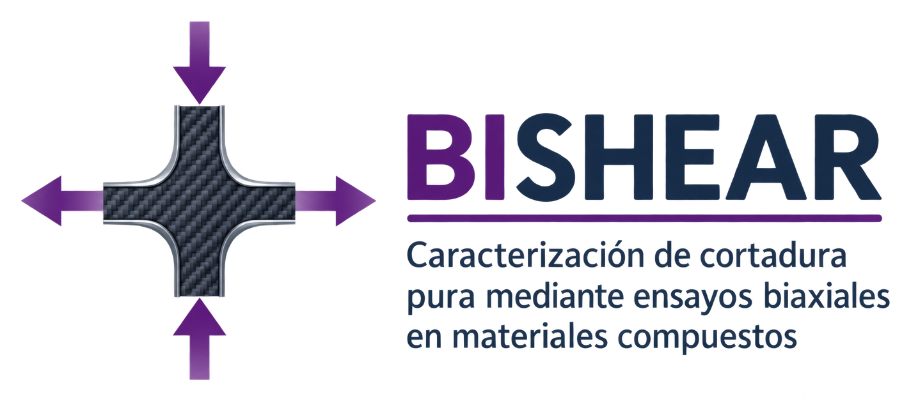

Grupo de investigación COMES · UCLM
Proyectos de investigación
Investigación en mecánica de los medios continuos, ingeniería de estructuras y materiales, con especial atención a la caracterización y modelado de materiales compuestos.
Líneas activas y proyectos desarrollados
Proyectos destacados
Selecciona un proyecto para acceder a su página web.

Proyecto regional · JCCM
En ejecución
CORA
Estudio de la respuesta a cortadura en estructuras laminares fabricadas con material compuesto
Visitar proyecto
Generación de Conocimiento · AEI
En ejecución
RENO
Respuesta no lineal gobernada por la cortadura en materiales compuestos considerando cargas biaxiales y el efecto de radiación ionizante
Visitar proyecto
Prueba de Concepto · AEI
Finalizado
BISHEAR
Hacia la normalización del ensayo biaxial tracción-compresión para determinar propiedades mecánicas ante estados de cortadura pura en el plano
Visitar proyecto